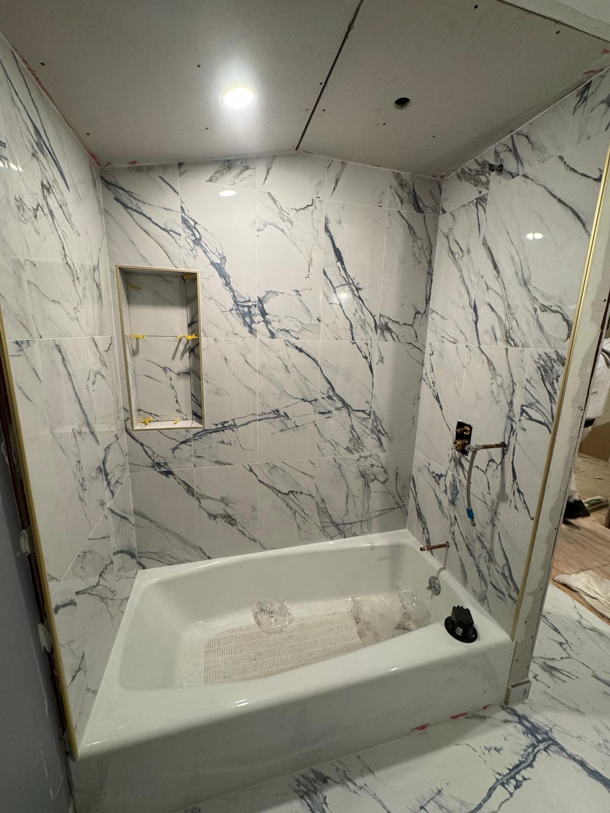
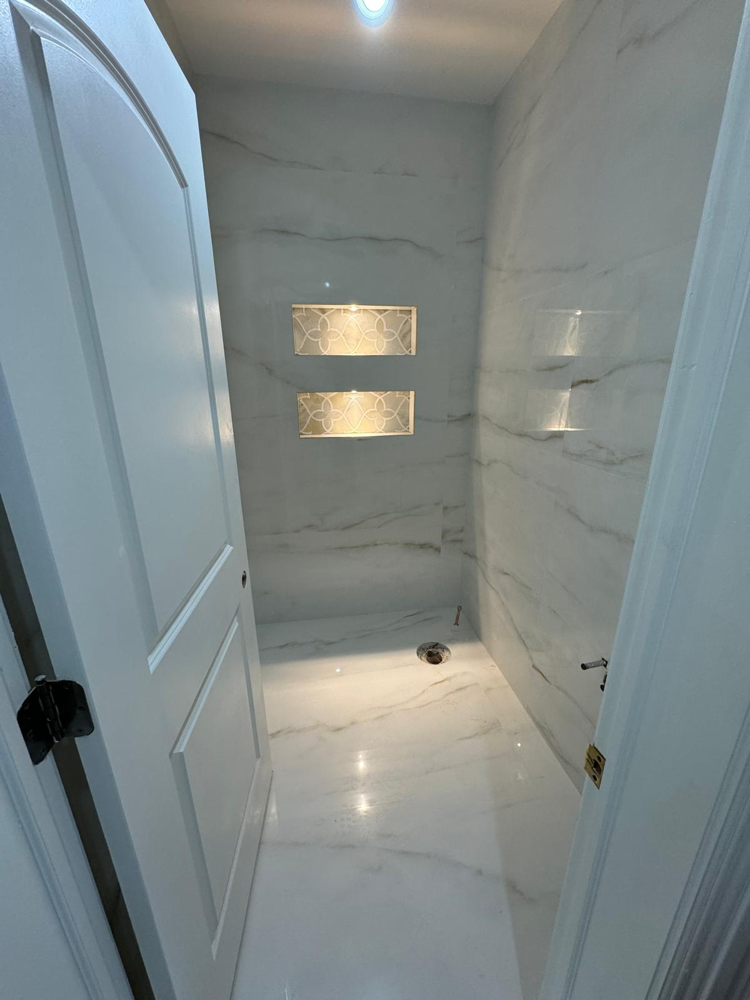
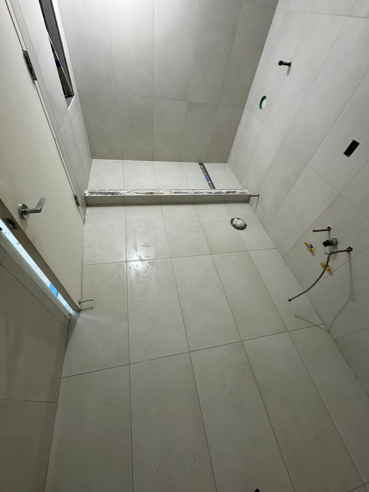
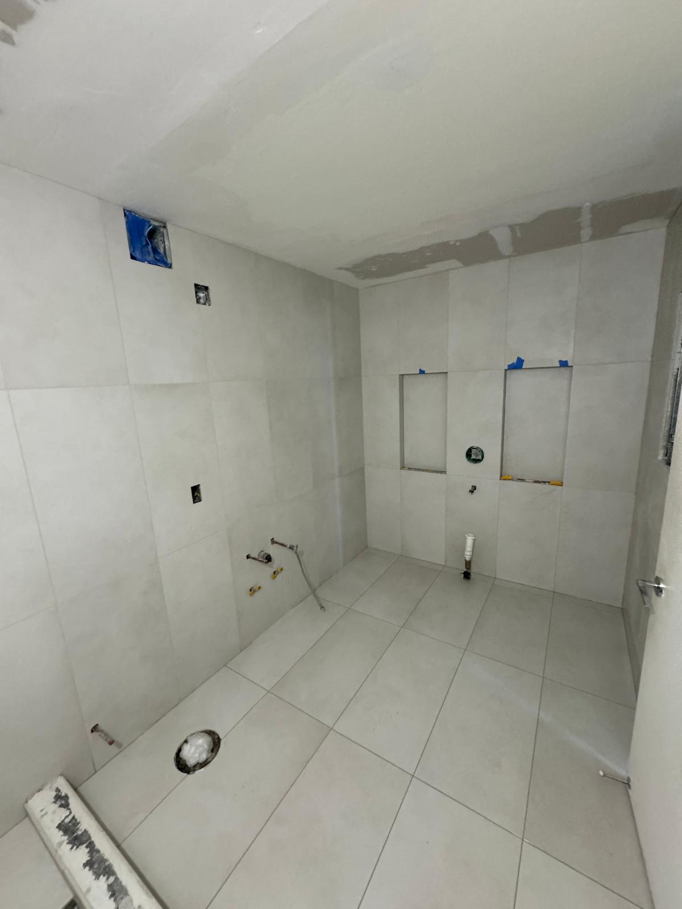
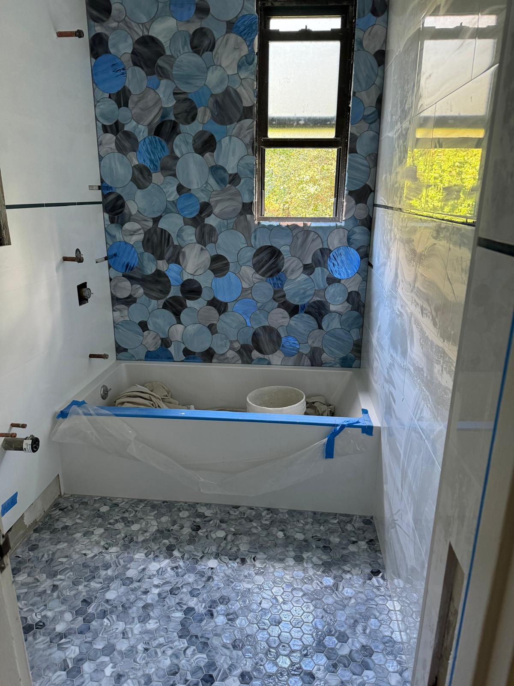

A frameless glass shower door is one of the most impactful upgrades you can make to a Manhattan apartment bathroom. It opens up the space, lets natural light flow through, and creates that clean, modern look that New York homeowners love. If you have never been through the process before, you probably have questions. How long does it take? What type of glass should you choose? This guide walks you through everything you need to know about frameless shower door installation in Manhattan, from the initial consultation to the finished result.

A marble shower and tub enclosure with dramatic veining, prepared for custom frameless glass in a Manhattan renovation project.
Space is the most valuable commodity in any New York City apartment. Traditional framed shower doors, with their bulky metal tracks and opaque profiles, can make even a generously sized bathroom feel cramped. Frameless shower enclosures eliminate that visual clutter, creating an uninterrupted sightline that makes your bathroom feel more open and airy.
Beyond aesthetics, frameless shower doors are easier to keep clean. Without metal frames trapping moisture, there are fewer places for mold and mildew to take hold. The thick tempered glass (typically 3/8 inch or 1/2 inch) is also remarkably durable, making it a practical long term investment.
The right configuration depends on the size and shape of your shower area, the position of the plumbing, and your building's structural requirements. Here are the most common options we install in Manhattan apartments.
A single sheet of tempered glass attached to the wall, with no door to swing open or closed. It works beautifully for walk in showers and curbless designs, creating a dramatic, spa like feel with minimal hardware.
The most popular choice for standard shower openings in Manhattan apartments. A hinged door swings outward on polished metal hinges mounted directly to the wall or glass. Keep in mind that you need enough clearance for the door to swing open fully, which is worth measuring carefully in a compact NYC bathroom.
For tub and shower combinations or bathrooms where a swinging door is not practical, a sliding frameless system is an excellent solution. The glass panels glide along a minimal track mounted at the top, keeping the floor area clear. This is especially popular in co op and condo bathrooms where the shower sits inside an alcove.

A walk in shower with illuminated niches and floor to ceiling marble, designed for a frameless glass enclosure.
Here is a step by step overview of how the process works when you hire a professional installer in Manhattan.
Every custom frameless shower door starts with a precise measurement of your shower opening. A technician visits your apartment, checks the walls for plumb, evaluates the tile, and discusses your preferences for glass thickness, hardware finish, and configuration. In older Manhattan buildings, walls are rarely perfectly straight, so accurate field measurements are essential.
Your glass is cut and polished to the exact dimensions of your shower. This fabrication period typically takes one to two weeks. Tempered glass cannot be trimmed on site, so getting the measurements right the first time is critical.
On installation day, the team brings the glass panels, hinges, clamps, and hardware. For most single door installations, the process takes two to four hours. The glass is secured with stainless steel or brass hardware in finishes like brushed nickel, polished chrome, matte black, or satin gold.
Silicone sealant is applied along the edges where the glass meets the tile. The door swing is tested, alignment is verified, and the entire installation is inspected to ensure everything is watertight.

A freshly tiled shower area with large format porcelain tile, ready for frameless glass panel installation.
Pricing for frameless glass shower doors in NYC depends on several factors: the size of the opening, the glass thickness, the hardware finish, and the complexity of the installation. As a general range, most Manhattan homeowners can expect to invest between $800 and $3,000 or more for a custom frameless shower door. A standard single hinged door on a straightforward shower opening falls toward the lower end, while multi panel enclosures with premium hardware and thicker glass will be at the higher end.
Unlike shower curtains that need replacing or framed doors that corrode over time, a well installed frameless enclosure will look and function beautifully for 15 to 20 years or more. When you consider the durability and the added home value, it is one of the best returns on investment in any NYC bathroom renovation.
Renovating in a Manhattan co op or condo comes with unique logistics that most homeowners outside New York never have to think about. Here are a few things to keep in mind when planning your frameless shower door installation.
Building access and scheduling. Most Manhattan buildings require advance notice for deliveries and contractor access. Elevator reservations, loading dock schedules, and working hour restrictions all need to be coordinated ahead of time. An experienced NYC glass installer will be familiar with this process and can work within your building's requirements.
COI (Certificate of Insurance) requirements. Nearly every co op and condo board in Manhattan requires a Certificate of Insurance from any contractor entering the building. At Metro Glass Pro, we are fully licensed and insured and provide COI documentation as part of our standard process, so there is no delay on your end.
Protecting common areas. Your building may require floor and wall protection in hallways and elevators during the installation. A professional team will come prepared with protective coverings.

A large scale bathroom renovation with floor to ceiling tile work, showcasing the preparation that goes into a premium shower installation.
The two biggest decisions beyond layout are glass thickness and hardware finish. For most residential installations, 3/8 inch tempered glass offers an excellent balance of durability and weight. If you want a more substantial, ultra premium feel, 1/2 inch glass is the way to go, though it is heavier and may require reinforced wall anchoring in some older buildings.
Hardware finish is where you can personalize the look. Matte black hardware has been one of the most requested finishes in Manhattan bathrooms, pairing beautifully with both marble and modern porcelain tile. Brushed gold and satin brass are gaining popularity in luxury renovations, especially in Tribeca and the Upper East Side. Polished chrome remains a timeless classic that works in virtually any style of bathroom.

A creative tile design with circular mosaic accents and hexagonal flooring, showcasing the kind of custom detail that pairs perfectly with frameless glass.
One of the best things about frameless glass is how easy it is to maintain. A quick squeegee after each shower prevents water spots and mineral buildup. For a deeper clean, a simple mixture of white vinegar and water works wonders. You can also ask your installer about protective glass coatings that cause water to bead up and roll off, keeping your shower looking spotless with minimal effort.
Metro Glass Pro specializes in custom frameless shower door installation throughout Manhattan, Brooklyn, Queens, and beyond. Every project starts with a free on site consultation and precise measurements to ensure a perfect fit.
Call us at (332) 999 3846 or email operations@metroglasspro.com to schedule your free estimate.
Monday through Friday, 8am to 6pm | Saturday, 9am to 2pm